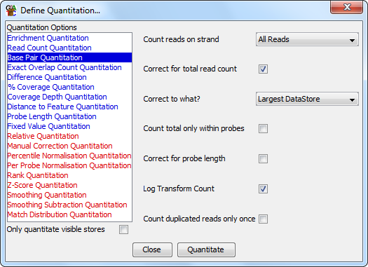

The Base Pair quantitation closely related to the Read Count Quantitation except that instead of counting the number of reads which overlap with a probe it counts the actual number of bases. This gives a more fine grained view of the data. It can correct the counts according to a few different factors which might bias the result - allowing it to be compared to other data sets.
The base pair quantitaiton is ideally suited for use where you have small probes with split or partial overlaps. It is particularly useful for mRNA-Seq experiments where you are putting probes over exons which will have vastly different sizes, and where you will get spliced reads mapping only a few bases into some exons.

The options you have for this module are:
If you choose to quantitate your data on a log scale then any probes which contain no reads will have their initial read count increased to 0.01 bases to avoid problems with infinite values when log transforming. This value is set before any subsequent correction for total read length or probe size. This means that in log transformed data different data stores could end up with different absolute values for probes containing no reads. If probe length correction is applied then probes with no reads will end up with a range of low values reflecting the different lengths of the probes. In these cases you might want to use an initial linear quantitation to allow you to flag and possibly filter out the regions with no reads, before later moving on to quantitate on a log scale.